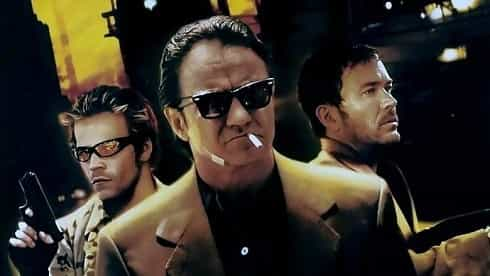
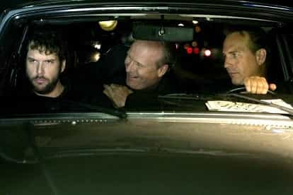

Bob Smith is a man in search of the truth. His favorite quotes are, "We're all fools on this earth, and I can be no different"; "I know it's true, I read it at the LIE-brary"; and "The truth is not misogynistic, it's just the truth".


Your old Uncle Bob tries to mix things up whenever and wherever possible, so today we’re going to take a look at four RPO films for men that might have slipped under the average guy’s radar, especially in the case of you younger squires.
Each of these winning films is definitely worth a look, as they not only entertain, but also provide you with a solid glimpse of some vital solutions surrounding the tantalizing mysteries of life. In addition, they sure as hell are fun to watch – which is always a plus, especially when it comes to spending your precious time and money watching Hollywood movies.
So without making an even bigger fuss about it, let’s get down to brass tacks and find out why these four, lesser-known, highly entertaining, RPO films for men are eminently worth your time – and then some.

In this hard-hitting, neo-noir crime drama, master thief Roy Egan (Harvey Keitel) comes out of retirement for one final jewelry heist, at the urging of his ex-con brother, Lee Egan (Timothy Hutton). After assembling a motley crew of highly skilled surveillance men and thieves, the Egan brothers stake out a jewelry store which they have chosen as their target, in order to get their ducks in a row for what appears to be a relatively easy score.
All goes well for them during the ensuing robbery, despite being surrounded by a bevy of clueless policemen in lights-a-flashing squad cars for a couple of extremely tense minutes shortly after the heist, and the Egan brothers and their crew manage to get away clean, retreating to the sanctuary of a trailer park out in the L.A. desert, in order to lay low for a while, as they set themselves to work regarding the details of fencing their ill-gotten gains.

But things go to hell in a hand basket at that point, as the psychotic newcomer to their crew, Skip Kovich (Stephen Dorff), decides to blow them all away and make off with the goods. Roy Egan manages to escape Kovich’s wrath, but his brother Lee isn’t so lucky, catching a round in the chest at close range from Kovich’s .38. Roy hides in a nearby drain pipe after the police are called to the scene, and after he takes a day or two to mend his psyche, and his wounds, in a seedy L.A. hotel room, he hatches a devious scheme for exacting revenge on the traitorous Skip Kovich.
The remainder of this solid, RPO film for men is violent, gritty, totally believable, and rounded out by a strong performance from Famke Janssen, who plays the recently widowed Rachel Montana, whose husband was one of Skip’s trailer-park murder victims. Janssen’s bitch-on-wheels portrayal of the righteously indignant hot wife of a dead ex-con, features numerous shit tests, extreme vulnerability, simmering sexuality, and ultimately, a genuine display of knockout loyalty to the man who eventually gets revenge (as well as a pile of money) for both of them.
This highly satisfying film will leave you feeling hopeful that women like Janssen’s character actually exist in the real world. And in the opinion of your Old Uncle Bob, they definitely do. You just have to work hard to find them, and then, you have to be man enough to keep them. (In my particular case, for maybe a year or two, tops.)
This is a good film to watch with that hottie you’ve had your eye on who lives in your building. Shoot her a text and tell her to cancel her plans and get the hell over to your place, pronto – and don’t forget to bring refreshments.
This under-the-radar, neo-noir, cinematic gem is based on the novel of the same name, written by Walter Mosley. Set in 1948 Los Angeles, Ezekiel “Easy” Rawlins (Denzel Washington), is a World War II veteran who suddenly finds himself working as a private investigator, after being wrongfully laid off from his job working for an aircraft manufacturer.
Despite having no training, Rawlins’ fervent desire to continue paying his mortgage soon leads him to an L.A. bar managed by his old friend Joppy (Mel Winkler), where he is introduced to the shady DeWitt Albright (Tom Sizemore). Albright informs Rawlins that a beautiful young woman, Daphne Monet (Jennifer Beals), has gone missing, and he is looking to hire someone to locate her. Daphne is the girlfriend of the wealthy Todd Carter (Terry Kinney), who was the favorite to win the L.A. mayoral election, until he inexplicably dropped out of the race.

Rawlins accepts Albright’s terms for the private investigation, and he sets out to find the missing Daphne Monet – a move which, due to the age-old axiom of hindsight being 20/20, he ultimately realizes was a really big mistake.
This fast-paced film is chock-full of tension, action, drama, violence and sex—not to mention numerous red-pill life lessons, which are offered up primarily by Denzel Washington’s character.
An example of Ezekiel “Easy” Rawlins’ dime-store, buddha-like wisdom:
A man once told me that when you step out of your door in the morning, you’re already in trouble. The only question is, are you on top of that trouble or not?
Denzel Washington really brings the thunder in this excellent RPO film for men, and Don Cheadle’s performance as his lifelong friend from Texas, the murderous Mouse Alexander, is a thing of absolute beauty. This is a really good film – and just like a classic old car, you can’t miss by taking it for a spin.
Maybe it’s because he’s quite a bit like the character he portrays in this intriguing, neo-noir thriller – or maybe he just got lucky, as I usually don’t care for his acting skills – but Kevin Costner absolutely aces it as the well-to-do serial killer with a split personality, Earl Brooks, in this top-notch, captivating, RPO film for men.
For some strange reason, this film didn’t do very well at the box office, which is probably why a sequel has not been made up to this point in time. But many critics loved it, as did the Average Joe reviewers at IMDB, and your old Uncle Bob really liked it as well. So maybe Hollywood will pull its head out of its collective, increasingly SJW-esque butt in the very near future, and do a second installment in the franchise, because the first film is unsettling as hell and really solid, and Hollywood definitely owes us more of this kind of fare (no doubt about that one).
William Hurt’s portrayal of Costner’s split-off, alter-ego, Marshall, is delivered with deftly satisfying aplomb. Dane Cook brings it home as the sappy, beta, wannabe-serial-killer, Mr. Smith, and does so with smooth, likeable and totally believable ease (most likely because he is a beta and he is likeable), and despite Demi Moore’s palpably weak portrayal of Detective Tracy Atwood, this film fires fast and hard on all cylinders and will leave you rooting for Costner’s unhinged, mass-murderer character to escape his myriad police pursuers… so he can either get his act together and stop murdering people, or regroup and kill again.

The scenes featuring Hurt and Costner are truly epic; the dreary, cloudy, rainy, Portland Oregon locale is perfect for the overall mood of the film; and the murder scenes are tense, unsettling, and eerily real, to the point where you’ll feel the whole thing churning in the pit of your stomach.
This one is worth every second you spend on it – and there is zero doubt about that one. So check it out soon, young squires. You’ll be really glad you did.

I don’t usually care too much for the Coen brothers’ films (as if Joel Coen and Ethan Coen care what I think, Oscar-winners and multi-millionaires that they are), but this under-the-radar classic delivers a full-course cinematic meal, comprised of deception, betrayal and murder, and it’s served up hot and fresh – with a major side of shock sauce.
Texas bar-owner Julian Marty (Dan Hedaya) has an all-too-common problem on his hands, one that most men have to face at least once during the course of their lifetimes – his wife is fucking somebody else. Determined to get the proof of her infidelity, Marty hires sleazy private investigator Loren Visser (M. Emmet Walsh) to do whatever is necessary to catch the cheating slut in the act. Visser complies, taking numerous photographs of Marty’s wife, Abby (Frances McDormand), and her lover, Ray (John Getz), through a motel window.
After returning to Marty’s bar to show him the photos, Visser teases him about being cucked, and Marty starts doing a slow burn which eventually explodes into a raging, internal inferno, as he ultimately decides to have his wife Abby, and her lover, Ray – who happens to be working for Marty as one of his own bartenders – killed.
Marty contacts Visser again by phone, in order to arrange a meeting for them to discuss his new proposal, and they eventually get together at a hillside hangout for teenagers to work out the details, where Marty finds Visser hitting on an underage girl. Marty and Visser retreat to the privacy of Visser’s clunky old Volkswagen Beetle, where they hammer out the terms of the contract killing – $10,000 in cash, paid in full after the deal is done.
Visser accepts Marty’s proposal, and then tells him to disappear for a few days and go fishing. But after thinking it all over for a while, Visser hatches a devious double-cross that ultimately turns out to be Marty’s worst nightmare – as well as his own.
I won’t spoil the remainder of this truly entertaining and thought-provoking film for you, other than to point out that the Coen brothers actually managed to capture the truly demented nature of the human mind to absolute perfection here, as giant misunderstandings, miscommunications, and misinterpretations abound. The tension in some of the scenes is full-throttle fantastic; the dialogue is realistically spot-on; and the direction, acting and pace of the film are top-notch.
If you only see one of the four films I reviewed for you here today, make it this one. Because this is truly a five-star RPO film for men that will leave you thinking about human nature, human sexuality, and human depravity for a long time afterwards.
For a little taste of what you can expect from Blood Simple, here’s M. Emmet Walsh’s opening voiceover, from the very first scene of the film:
SCENE 1: An opening voiceover plays against dissolving Texas landscapes–broad, bare, and lifeless.
The world is full of complainers. But the fact is, nothing comes with a guarantee. I don’t care if you’re the Pope of Rome, President of the United States, or even Man of the Year–something can always go wrong. And go ahead, complain, tell your problems to your neighbor, ask for help–watch him fly. Now in Russia, they got it mapped out so that everyone pulls for everyone else–that’s the theory, anyway. But what I know about is Texas. And down here…you’re on your own.
Modern Hollywood movies are like a song with one note. And those one-note farces get really old after a very short while. But despite SJW Hollywood’s current penchant for producing mind-numbing drivel, you can still find some absolute winners inside the film vaults of yesteryear.
The elitists might be leading the game at the moment, but every point we score from here on out definitely counts. So vote with your dollars, young squires, and maybe Hollywood will backtrack one day very soon, and lift their all-too-heavy foot off of that mind-control gas pedal of theirs, and start making good films again. Rent a couple of these fast-paced, thought-provoking, RPO films for real men as soon as possible. And score a point for the manosphere.
No matter what happens in that regard, your old Uncle Bob will keep pointing out the golden cinematic wheat among the mountains of puerile, IQ-lowering chaff (so long as ROK wants me to do so and so long as I don’t run out of good films to review), and unlike the loyalty of your current special snowflake, that is something that you can most definitely count upon…
Read More: Cuckservatives Have Started To Adopt Manosphere Narratives